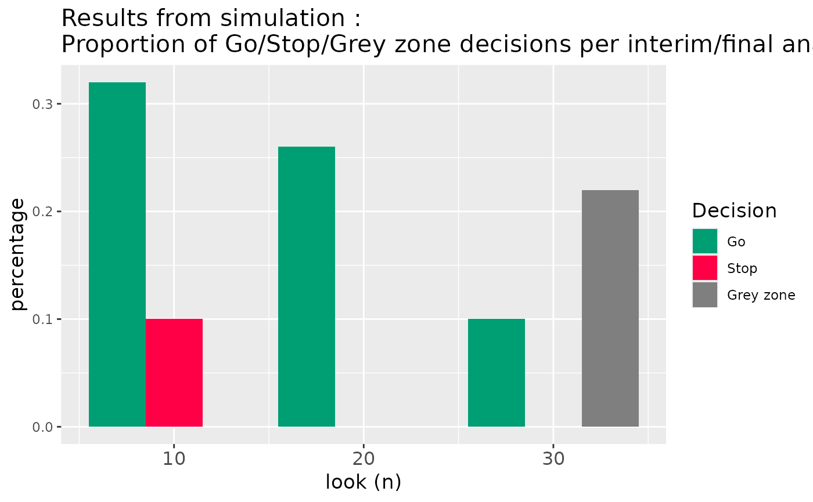
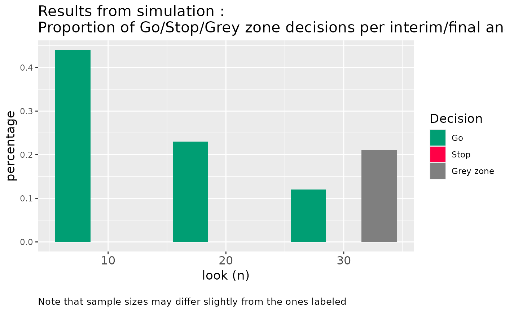
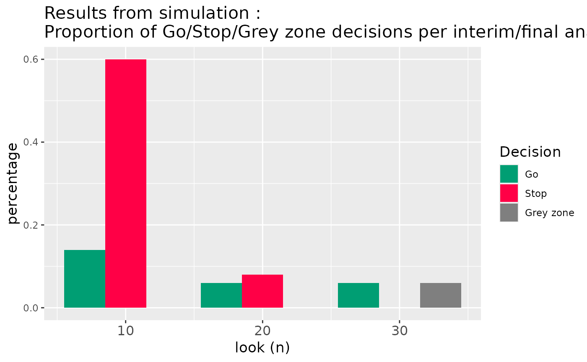

Plots results from simulated results of :
[ocPostprob()][ocPostprobDist()][ocPostpred()][ocPostpredDist()][ocRctPostprobDist()][ocRctPredprobDist()]
Arguments
- decision
(
numeric):
Go, Stop or Gray Zone decisions of all looks simulatedlength(sim)times.- all_sizes
(
numeric):
sample sizes of all looks simulatedlength(sim)times ifdistapplied.- all_looks
(
numeric):
original looks before adjustment bywiggle = TRUE, if applied. Different toall_sizeswhich is after the adjustment, if made.- wiggle_status
(
flag):
fromwiggleflag in object.
Examples
# Plot result of `ocPostprob()`:
res1 <- ocPostprob(
nnE = c(10, 20, 30),
truep = 0.40,
p0 = 0.20,
p1 = 0.30,
tL = 0.60,
tU = 0.80,
parE = c(1, 1),
sim = 100,
wiggle = FALSE,
nnF = c(10, 20, 30)
)
#> Warning: Advise to use sim >= 50000 to achieve convergence
plotOc(
decision = res1$Decision,
all_sizes = res1$SampleSize,
all_looks = res1$Looks,
wiggle_status = res1$params$wiggle
)

# Plot result of `ocPostprob()` when `wiggle = TRUE`:
res4 <- ocPostprob(
nnE = c(10, 20, 30),
truep = 0.40,
p0 = 0.20,
p1 = 0.30,
tL = 0.60,
tU = 0.80,
parE = c(1, 1),
sim = 100,
wiggle = TRUE,
nnF = 30
)
#> Warning: Advise to use sim >= 50000 to achieve convergence
plotOc(
decision = res4$Decision,
all_sizes = res4$SampleSize,
all_looks = res4$Looks,
wiggle_status = res4$params$wiggle
)

# Plot result of `cPredProbDist()` when `wiggle = TRUE`:
res7 <- ocPredprobDist(
nnE = c(10, 20, 30),
truep = 0.40,
deltaE = 0.10,
deltaF = 0.10,
relativeDelta = FALSE,
tT = 0.6,
phiU = 0.80,
phiL = 0.20,
parE = c(1, 1),
parS = c(5, 25),
weights = 1,
weightsS = 1,
sim = 50,
wiggle = TRUE,
decision1 = TRUE
)
#> Warning: Advise to use sim >= 50000 to achieve convergence
plotOc(
decision = res7$Decision,
all_sizes = res7$SampleSize,
all_looks = res7$Looks,
wiggle_status = res7$params$wiggle
)
# Plot result of `ocRctPostProbDist()` :
res9 <- ocRctPostprobDist(
nnE = c(10, 20, 30),
pE = 0.4,
pS = 0.3,
deltaE = 0.15,
deltaF = 0.05,
relativeDelta = FALSE,
tL = 0.2,
tU = 0.8,
parE = c(a = 1, b = 1),
parS = c(a = 1, b = 1),
randRatio = 1,
sim = 50,
wiggle = TRUE,
nnF = c(10, 20, 30)
)
#> Warning: Advise to use sim >= 50000 to achieve convergence
plotOc(
decision = res9$Decision,
all_sizes = res9$SampleSize,
all_looks = res9$Looks,
wiggle_status = res9$params$wiggle
)
# Plot result of `ocRctPostProbDist()` when `relativeDelta = FALSE`
res10 <- ocRctPostprobDist(
nnE = c(10, 20, 30),
pE = 0.4,
pS = 0.3,
deltaE = 0.15,
deltaF = 0.05,
relativeDelta = FALSE,
tL = 0.2,
tU = 0.8,
parE = c(a = 1, b = 1),
parS = c(a = 1, b = 1),
randRatio = 1,
sim = 50,
wiggle = FALSE,
nnF = c(10, 20, 30)
)
#> Warning: Advise to use sim >= 50000 to achieve convergence
plotOc(
decision = res10$Decision,
all_sizes = res10$SampleSize,
all_looks = res10$Looks,
wiggle_status = res10$params$wiggle
)

# Plot result of `ocRctPredProbDist()` when `relativeDelta = TRUE`:
res12 <- ocRctPredprobDist(
nnE = c(10, 20, 30),
pE = 0.3,
pS = 0.3,
deltaE = 0.2,
deltaF = 0.1,
phiU = 0.8,
phiFu = 0.2,
relativeDelta = TRUE,
tT = 0.6,
tF = 0.4,
parE = c(a = 1, b = 1),
parS = c(a = 1, b = 1),
weights = 1,
weightsS = 1,
randRatio = 1,
sim = 50,
wiggle = FALSE,
nnF = c(10, 20, 30),
decision1 = TRUE
)
#> Warning: Advise to use sim >= 50000 to achieve convergence
plotOc(
decision = res12$Decision,
all_sizes = res12$SampleSize,
all_looks = res12$Looks,
wiggle_status = res12$params$wiggle
)